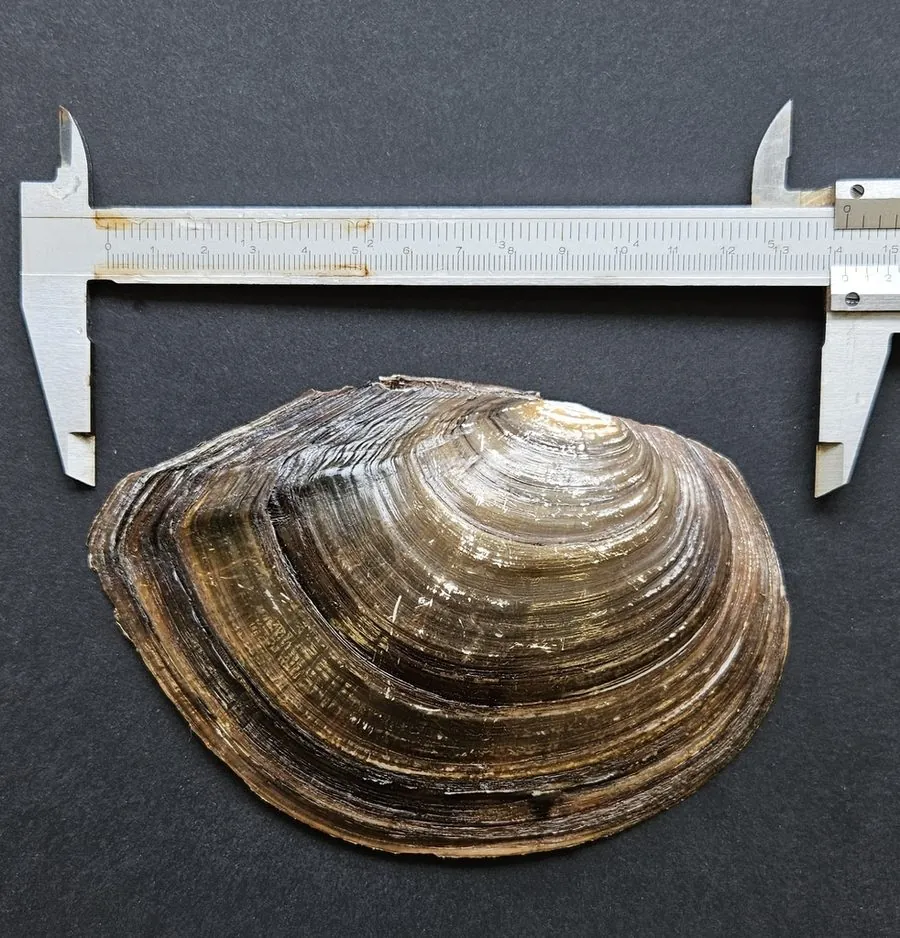

软体动物 · 动物界
无齿蚌 Anodonta woodiana

壳薄而大、铰合部没有齿的淡水蚌，俗称河蚌，广泛分布于中国的江河湖泊，是常见的大型淡水贝类。
- 分类
- 门软体动物门纲双壳纲目蚌目科蚌科属无齿蚌属
- 栖息环境
- 江河、湖泊、池塘和沟渠的泥沙底浅水区
- 地理分布
- 中国各大水系，从东北到华南均有分布，也见于东亚其他地区
- 保护级别
- 尚无保护级别；为常见淡水贝类，可用作水质指示生物
物种志
无齿蚌的贝壳大而薄，壳长可达二十五厘米，外形呈椭圆形，壳质较脆，壳面呈黄绿、褐绿至黑褐色，有细密的同心生长纹，幼蚌壳面常带绿色的放射色带。壳顶低平，铰合部没有铰合齿，只有韧带连接两壳，无齿蚌之名由此而来。壳内面有珍珠光泽，呈银白或淡粉色。足部肥厚，斧状，能在泥沙中掘穴，水管较长，滤食时伸出泥面。
它分布于中国各大水系，从东北到华南的江河、湖泊、池塘和沟渠都能见到，也见于东亚其他地区，栖息在水流平缓、底质为泥沙的浅水区，靠鳃滤食浮游植物和有机碎屑。雌雄异体，繁殖期在春夏，幼虫为钩介幼虫，需寄生在鱼类鳃或鳍上完成变态，再脱落到底质中生活。无齿蚌肉可食，也是青鱼、鲤鱼等鱼类的天然饵料，壳可制纽扣、珍珠核和工艺品。它还是水质监测的指示生物，目前尚无保护级别。
形态与习性
- 食性靠鳃滤食浮游植物和有机碎屑
- 壳长可达二十五厘米，壳薄而大
- 铰合部没有铰合齿，仅靠韧带连接两壳
- 繁殖春夏繁殖，钩介幼虫寄生鱼类完成变态
- 用途肉可食，壳可制纽扣、珍珠核和工艺品
- 生态青鱼、鲤鱼等的天然饵料，可作水质指示生物
趣味知识
- 无齿蚌的铰合部没有齿，两壳只靠一条韧带连着，因此得名。
- 幼蚌的壳面常带绿色放射色带，长大后逐渐变成黑褐色。
- 它的幼虫要寄生在鱼鳃或鱼鳍上才能完成变态，这是淡水蚌共同的繁殖方式。